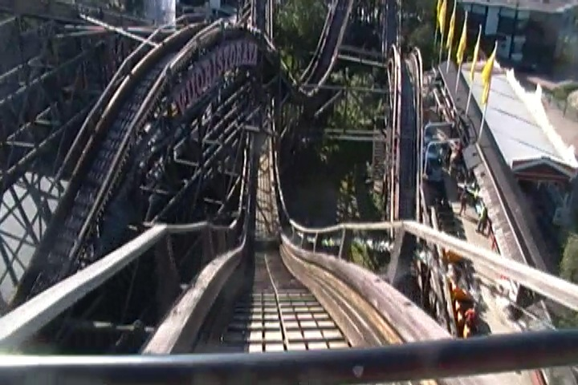
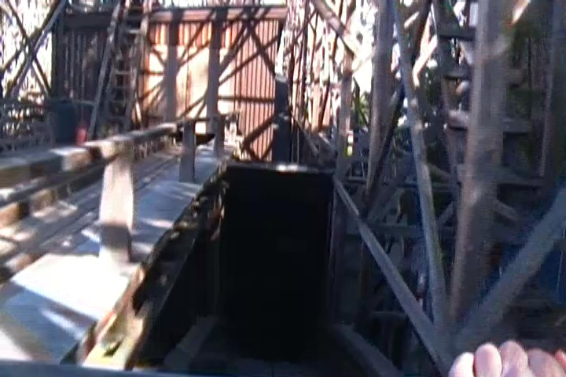
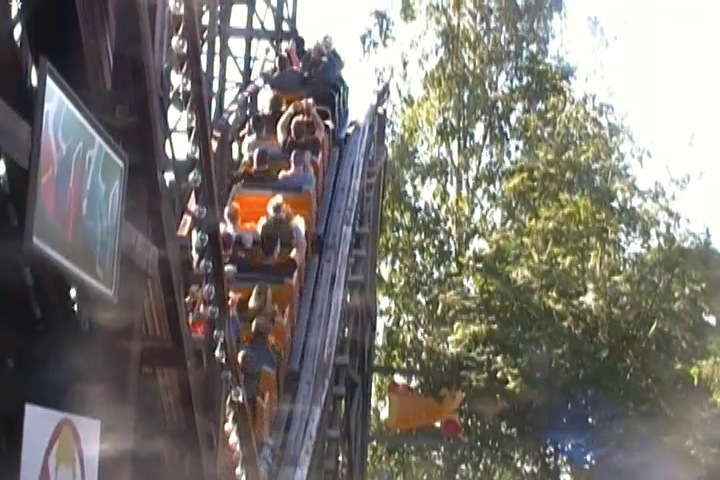
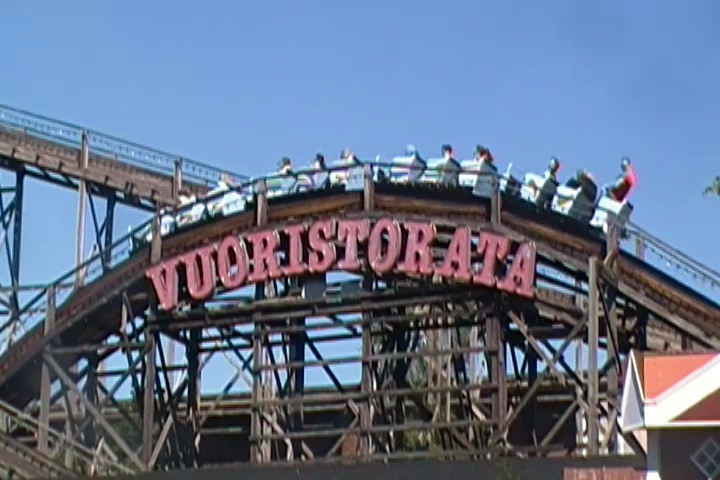

| |
Vuoristorata Review

We're here at Linnanmäki, where we'll be reviewing the parks original coaster that's been around since the park first opened. Vuoristorata. Now this is one of the original Brakeman coasters that's actually still operating to this day. However, while the ride is still fairly old, it's not quite as the other Brakeman coasters you see at Bakken and Tivoli Gardens, as this one opened up in the early 1950s, whereas the Tivoli Gardens one was freaking bombed by Nazis! But still, 1951 is still pretty old for a coaster, and it's always good to have classic coasters that still have a brakeman. In fact, it's still a really fun ride. So let's hop in the trains, pull down the lap bar, wave hello to the brakeman, and we're off. We immedietly head into some straight track leading to a turnaround, leading us straight to the lifthill. You climb on up, and get a good view of Ukko. We reah the top, head around a turn, and right down the first drop. It gives us some good speed. We then rise up a hill, and then go through another turn. From up here, we get a good view of Helsinki down from the top of this hill, as well as a nice veiw of Linnanmäki. We then head down the second drop, which is actually a double down. There's actually some decent airtime here, but trust me, That's nothing compared to what's coming up. We then head over a small little bunny hill. And hey. We get a little bit of airtime here. YAY!!! Not super strong, but I'm still happy with it. We then head up a small hill and go around a turn. We coast around the turn, right before heading down another double down hill. Again, we get a little airtime. YAY!!! We then head over a fun little bunny hop, which...HOLY SH*T!!! YOU GET AIRTIME HERE!!! And no, I dont mean a nice little pop that's fun. No! I'm talking a full blown pop of EJECTOR AIR!!! Seriously, this one pop of airtime felt like it came right from Coaster @ PNE Playland. It's on par with the hills on that thing! Maybe our brakeman just allowed for an extra crazy ride, but I certainly hope not, because I want everyone to experience that crazy pop of airtime! We then rise up another hill, head around another turn, and head down a drop. Yay!! We go over a little bunny hop. And of course, there's no airtime here. But hey, we then get to TAKE THE TUNNEL!!! Yeah, after the vagina tunnel at Bakken, or the mountains at Tivoli, a regular old tunnel just isn't nearly as exciting. But hey. We can live with it. TAKE THE TUNNEL!!! We head up a small hill, go around a turn and...we see the light. And that is the end of Vuoristorata as we glide into the final brake run and into the station. The coaster itself is a lot of fun. It's just a really good and fun ride. These brakeman coasters are a dying breed, and this one of the only ones left in the world. Not to mention, it has some really good pops of airtime, including one that literally just EJECTS you. It's jsut a fun classic wooden coaster and worth a ride or two when you visit Linnanmäki.
7/10
Location: Linnanmäki
Opened: 1951
Built by: Valdemar Lebech
Last Ridden: June 28, 2014
Vuoristorata Photos



Home
|